マクロ政治データ分析実習
第12回 交互作用
授業開始前に
すぐに実習できるように準備しておきましょう。
- JDCat分析ツールを起動しておいてください。
- 本日授業用のプロジェクトを作成するか、既存のプロジェクトを開いてください。
- LMSから実習用データをダウンロードしておいてください。
- ダウンロードしてデータをプロジェクト・フォルダーにアップロードしてください。
- プロジェクト・フォルダー内に
Dataフォルダーを作成し、そこにアップロードしましょう。
- プロジェクト・フォルダー内に
- 実習用コードを入力するスクリプト、またはQuarto（or R Markdown）ファイルを開き、以下のコードを入力&実行してください（コピペ可）。
- トラブルが生じた場合、速やかにTAを読んでください。
- 時間に余裕があれば、スライド内のコードも書いておきましょう。
交互作用とは
交互作用とは
主な説明変数（\(X\)）と応答変数（\(Y\)）の関係において、\(X\)が\(Y\)に与える影響がその他の変数（\(Z\)）の影響を受ける場合

- \(Z\)は調整変数 (moderation variable; moderator)と呼ばれる。
- 調整変数はダミー変数でも、連続変数でも可能
- \(X\)が\(Y\)に与える影響は\(Z\)によって変わる。
- 例）\(Z=1\)の場合、\(X\)が1上がると\(Y\)は2上がるが、\(Z=2\)の場合、\(X\)が1上がると\(Y\)は5上がる。
- \(\Rightarrow\) \(Z\)の値によって\(X \rightarrow Y\)の効果（傾き）が変わる。
回帰分析における交互作用
説明変数、調整変数、交差項を投入した回帰モデル
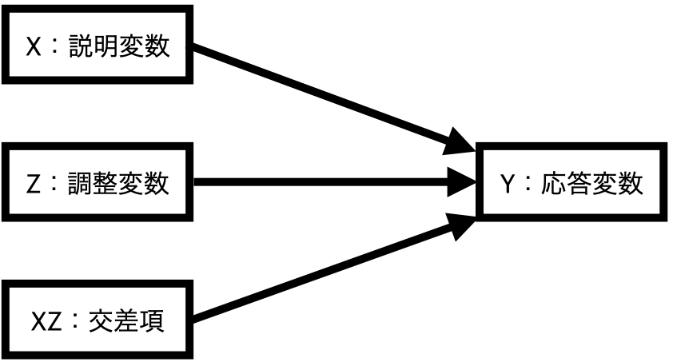
\[ \hat{Y} = \alpha + \beta_1 X + \beta_2 Z + \beta_3 X \cdot Z \]
- 交差項 (interaction term)
- 説明変数に調整変数をかけた変数 ( \(X \cdot Z\) )
- 変数\(X\)が\(Y\)に与える効果は\(\beta_1\)? \(\leftarrow\) 間違い
- 回帰式において\(X\)は\(\beta_3\)にも登場する。
- 式を変形すると…
\[ \hat{Y} = \alpha + (\beta_1 + \beta_3 Z) X + \beta_2 Z \]
- 変数\(X\)が\(Y\)に与える効果は \(\beta_1 + \beta_3 Z\)
- \(\Rightarrow\) 変数\(X\)が\(Y\)に与える影響は\(Z\)の影響を受ける。
調整変数がダミー変数の場合
調整変数\(Z\)が0、または1の値のみをとるダミー変数の場合（\(Z \in \{0, 1\}\)）
\[ \hat{Y} = \alpha + \beta_1 X + \beta_2 Z + \beta_3 X \cdot Z \]
- 調整変数（\(Z\)）が0か1かによって、\(X\)が\(Y\)に与える影響が変化する。
- \(Z = 0\)の場合：\(\hat{Y} = \alpha + \beta_1 X + \beta_2 Z\)
- \(X\)が\(Y\) に与える影響は\(\beta_1\)
- \(Z = 1\)の場合：\(\hat{Y} = \alpha + \beta_1 X + \beta_2 Z + \beta_3 X = \alpha + (\beta_1 + \beta_3) X + \beta_2 Z\)
- \(X\)が\(Y\)に与える影響は\(\beta_1 + \beta_3\)
調整変数がダミー変数の場合
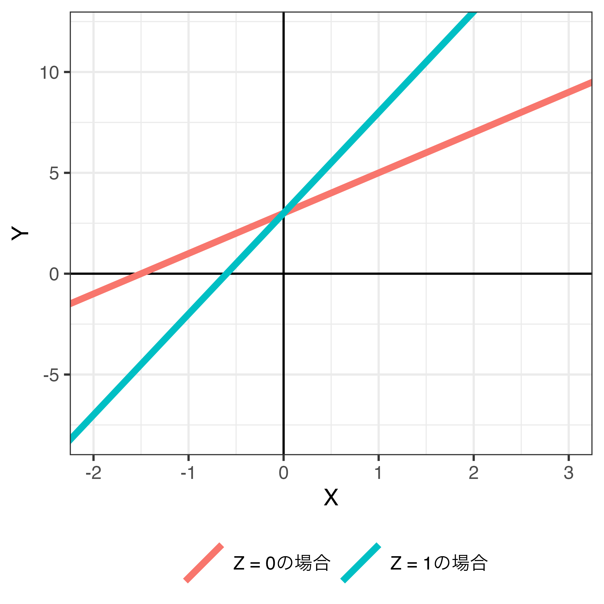
以下のモデルの場合…
\[ \begin{align} \hat{Y} & = 3 + 2 X + 1 Z + 3 X \cdot Z \\ & = 3 + (2 + 3Z) X + 1 Z \end{align} \]
- \(X\)の係数は\(2 + 3Z\)
- \(Z = 0\)なら… (赤)
- \(\hat{Y} = 3 + 2X + 1Z\)であるため、\(X\)が1上がると、\(Y\)は2上がる。
- \(Z = 1\)なら… (青)
- \(\hat{Y} = 3 + 5X + 1Z\)であるため、\(X\)が1上がると、\(Y\)は5上がる。
- \(\Rightarrow\) \(Z\)の値に応じて\(X\)の傾きが変化する。
調整変数が連続変数の場合
調整変数\(Z\)が無数の値をとる連続変数の場合
\[ \hat{Y} = \alpha + \beta_1 X + \beta_2 Z + \beta_3 X \cdot Z \]
- 調整変数（\(Z\)）の値によって、\(X\)が\(Y\)に与える影響が変化する。
- \(Z\)が1の場合：\(\hat{Y} = \alpha + \beta_1 X + \beta_2 Z + \beta_3 X \cdot 1 = \alpha + (\beta_1 + \beta_3) X + \beta_2 Z\)
- \(X\)が\(Y\)に与える影響は\(\beta_1 + \beta_3\)
- \(Z\)が2.5の場合：\(\hat{Y} = \alpha + \beta_1 X + \beta_2 Z + \beta_3 2.5 \cdot X = \alpha + (\beta_1 + 2.5\beta_3) X + \beta_2 Z\)
- \(X\)が\(Y\)に与える影響は\(\beta_1 + 2.5\beta_3\)
- \(Z\)が6の場合：\(\hat{Y} = \alpha + \beta_1 X + \beta_2 Z + \beta_3 6 \cdot X = \alpha + (\beta_1 + 6\beta_3) X + \beta_2 Z\)
- \(X\)が\(Y\)に与える影響は\(\beta_1 + 6\beta_3\)
- 無数のケースがあり得る。
調整変数が連続変数の場合
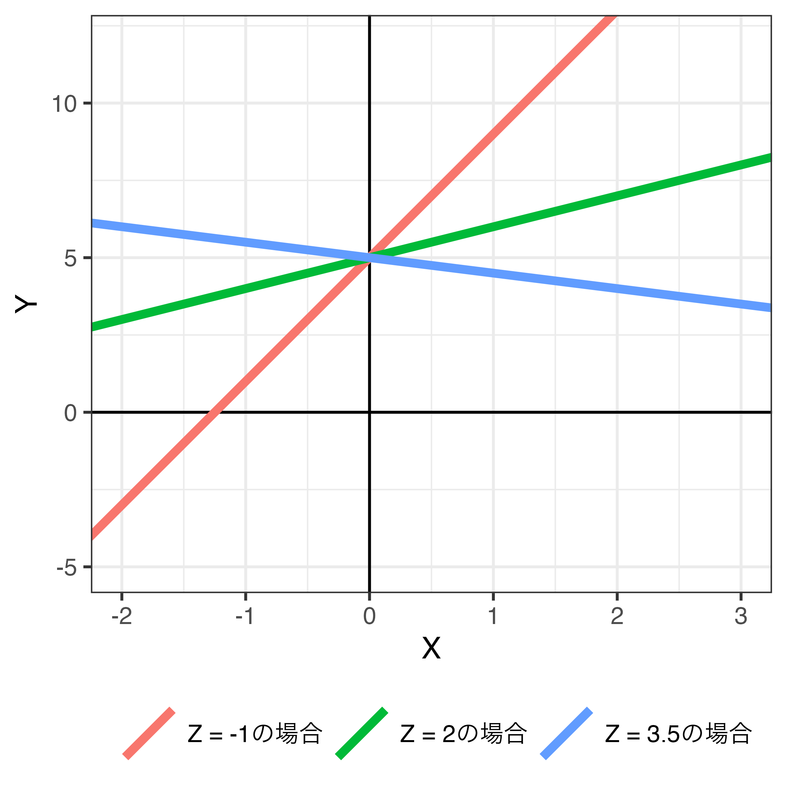
以下のモデルの場合…
\[ \begin{align} \hat{Y} & = 2 + 3 X + 2 Z - 1 X \cdot Z \\ & = 2 + (3 - 1Z) X + 2 Z \end{align} \]
- \(X\)の係数は\(3 - Z\)
- \(Z = -1\)なら\(X\)の係数は\(3 - (-1) = 4\)（赤）
- \(\hat{Y} = 2 + 4X + 2Z\)であるため、\(X\)が1上がると、\(Y\)は4上がる。
- \(Z = 2\)なら\(X\)の係数は\(3 - 2 = 1\)（緑）
- \(\hat{Y} = 2 + 1X + 2Z\)であるため、\(X\)が1上がると、\(Y\)は1上がる。
- \(Z = 3.5\)なら\(X\)の係数は\(3 - 3.5 = -0.5\)（青）
- \(\hat{Y} = 2 - 0.5 X + 2Z\)であるため、\(X\)が1上がると、\(Y\)は0.5下がる。
交差項を入れた回帰分析
実習用データ
# A tibble: 3,000 × 6
TempKyosan Female Age Satisfaction Interest Ideology
<dbl> <dbl> <dbl> <dbl> <dbl> <dbl>
1 20 1 69 4 4 9
2 20 1 47 1 1 7
3 0 1 37 3 3 11
4 0 0 51 4 3 11
5 20 0 38 2 3 7
6 0 0 71 5 4 11
7 10 0 47 3 3 9
8 0 0 71 4 4 11
9 25 0 75 3 4 9
10 40 1 66 2 3 6
# ℹ 2,990 more rows実習用データの概要
| 変数 | 説明 | 備考 |
|---|---|---|
TempKyosan |
日本共産党に対する感情温度 | 高いほど好感 |
Female |
女性ダミー | 0: 男性 / 1: 女性 |
Age |
回答者の年齢 | |
Satisfaction |
政治満足度 | 高いほど満足 |
Interest |
回答者の政治関心 | 高いほど関心あり |
Ideology |
回答者のイデオロギー | 高いほど保守的 |
記述統計量
今回のデータはすべて連続変数扱いとなるため、前処理は不要
- 名目変数もダミー変数になると連続変数と同じ扱いでOK
Descriptive Statistics
jes_df
N: 3000
Mean Std.Dev Min Max N.Valid
------------------ ------- --------- ------- -------- ---------
TempKyosan 26.88 24.95 0.00 100.00 3000.00
Female 0.50 0.50 0.00 1.00 3000.00
Age 47.34 15.63 18.00 75.00 3000.00
Satisfaction 2.45 1.08 1.00 5.00 3000.00
Interest 2.74 0.83 1.00 4.00 3000.00
Ideology 6.34 2.10 1.00 11.00 3000.00問題設定
政治満足度が共産党に対する感情温度に与える影響を調べたい。ただし、この影響は一定ではなく、性別や年齢によって異なるかも知れない。政治満足度が共産党に対する感情温度に与える影響の不均一性を調べるためにはどうすれば良いだろうか。仮説検定に使用する有意水準は5%とする（\(\alpha = 0.05\)）。
モデル1
- 応答変数：共産党に対する感情温度（
TempKoysan） - 主な説明変数：政治満足度（
Satisfaction） - 調整変数：女性ダミー（
Female）\(\leftarrow\) ダミー変数（二値変数） - 統制変数：政治関心（
Interest）、イデオロギー（Ideology）、年齢（Age）
モデル2
- 応答変数：共産党に対する感情温度（
TempKoysan） - 主な説明変数：政治満足度（
Satisfaction） - 調整変数：年齢（
Age）\(\leftarrow\) 連続変数 - 統制変数：政治関心（
Interest）、イデオロギー（Ideology）、女性ダミー（Female）
調整変数がダミー変数の場合（モデル1）
政治満足度（= 説明変数）が共産党に対する感情温度（= 応答変数）に与える影響は性別（= 調整変数）によって変わる。
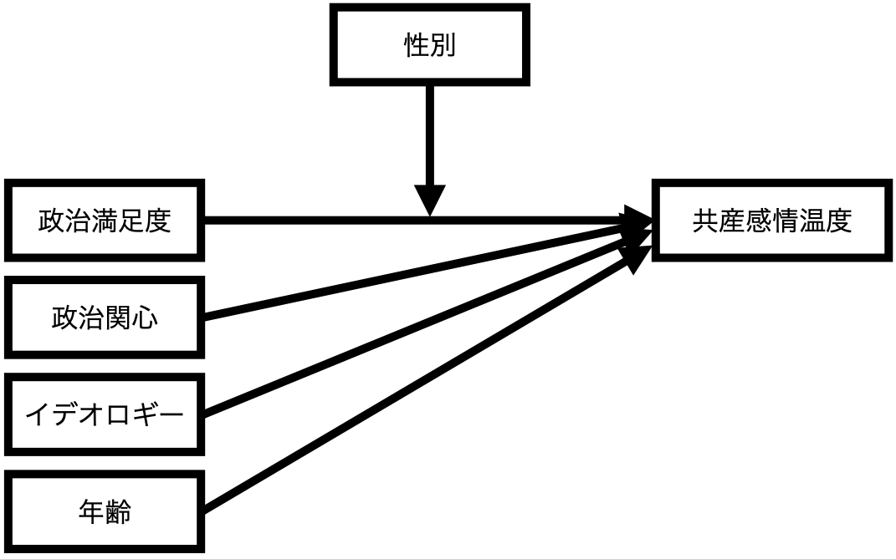
調整変数がダミー変数の場合の回帰式（モデル1）
\[ \widehat{\mbox{TempKyosan}} = \alpha + \beta_1 \mbox{Satisfaction} + \beta_2 \mbox{Female} + \beta_3 \mbox{Interest} + \beta_4 \mbox{Ideology} + \beta_5 \mbox{Age} + \beta_6 (\mbox{Satisfaction} \cdot \mbox{Female}) \]
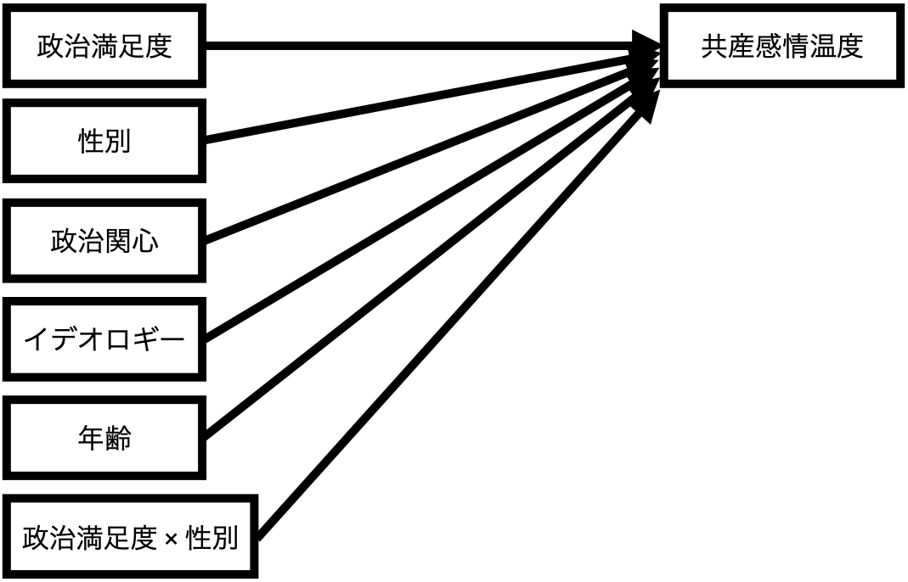
調整変数が連続変数の場合（モデル2）
政治満足度（= 説明変数）が共産党に対する感情温度（= 応答変数）に与える影響は年齢（= 調整変数）によって変わる。
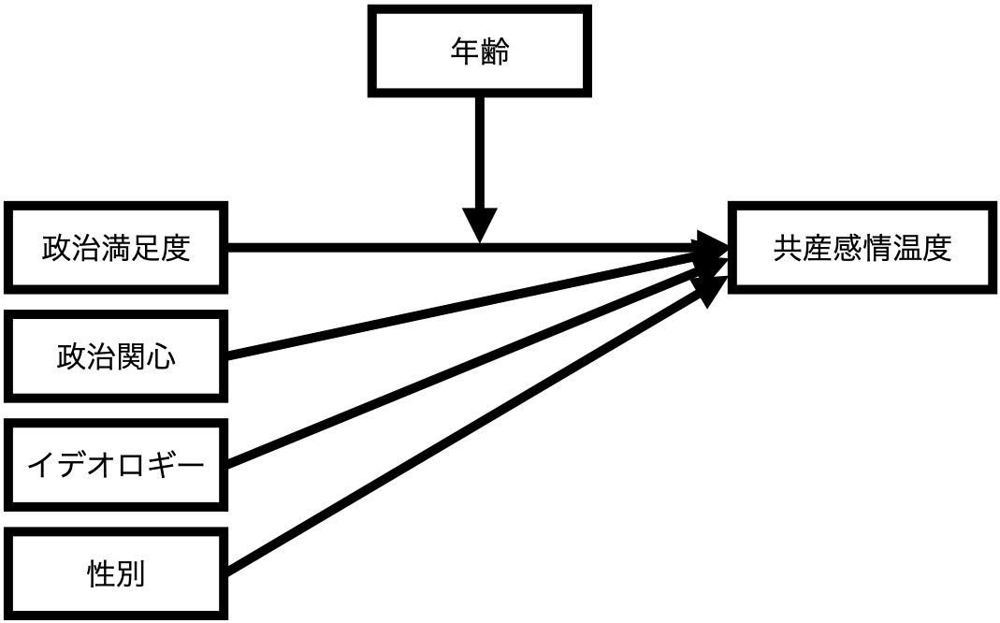
調整変数が連続変数の場合の回帰式（モデル2）
\[ \widehat{\mbox{TempKyosan}} = \alpha + \beta_1 \mbox{Satisfaction} + \beta_2 \mbox{Age} + \beta_3 \mbox{Interest} + \beta_4 \mbox{Ideology} + \beta_5 \mbox{Female} + \beta_6 (\mbox{Satisfaction} \cdot \mbox{Age}) \]
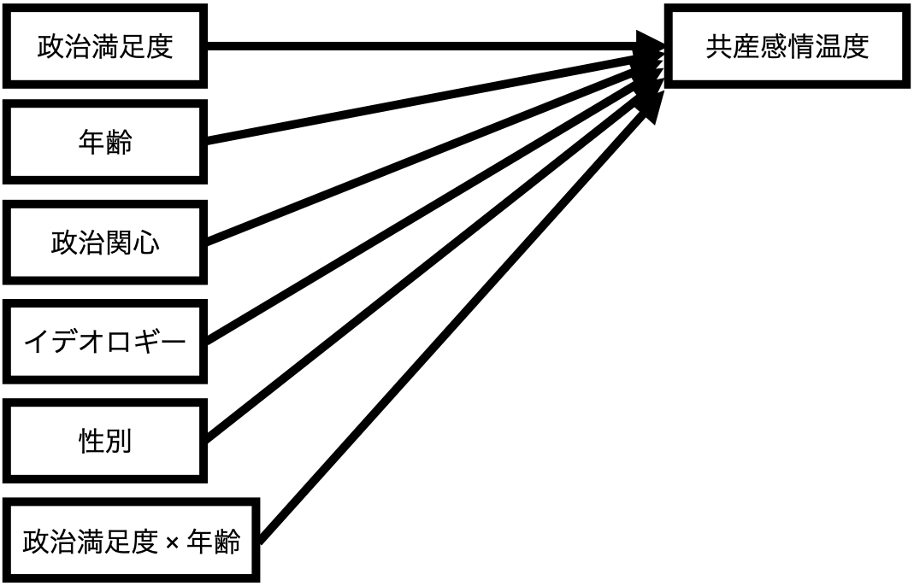
交差項を入れた回帰分析の推定方法
lm()内の回帰式（formula）に2つの変数を*でつなぐだけ
A * Bは説明変数としてA、B、A\(\times\)Bが同時に投入することを意味する。
| 係数 | 標準誤差 | t値 | p値 | |
|---|---|---|---|---|
| 切片 | 49.275 | 2.587 | 19.047 | < 0.001 |
| 政治満足度 | −4.732 | 0.561 | −8.429 | < 0.001 |
| 女性 | 2.752 | 2.186 | 1.259 | 0.208 |
| 政治関心 | 0.217 | 0.571 | 0.381 | 0.703 |
| イデオロギー | −1.887 | 0.214 | −8.815 | < 0.001 |
| 年齢 | −0.040 | 0.030 | −1.347 | 0.178 |
| 政治満足度 * 女性 | 0.902 | 0.817 | 1.104 | 0.270 |
調整変数がダミー変数の場合（fit1）
- 推定結果
- 共産に対する感情温度の予測値 = 49.28 - 4.73 \(\times\) 政治満足度 + 2.75 \(\times\) 女性ダミー + 0.22 \(\times\) 政治関心 - 1.89 \(\times\) イデオロギー - 0.04 \(\times\) 年齢 + 0.90 \(\times\) 政治満足度 \(\times\) 女性ダミー
- 共産に対する感情温度の予測値 = 49.28 - (4.73 - 0.90 \(\times\) 女性ダミー) \(\times\) 政治満足度 + 2.75 \(\times\) 女性ダミー + 0.22 \(\times\) 政治関心 - 1.89 \(\times\) イデオロギー - 0.04 \(\times\) 年齢
- 政治満足度が共産感情温度に与える影響：-(4.73 - 0.90 \(\times\) 女性ダミーの値)
- 男性の場合（女性ダミーの値 = 0）：-(4.73 - 0.90 \(\times\) 0) = -4.73
- 男性の場合、政治満足度が1単位上がると、共産に対する感情温度は約4.73度下がる。
- 女性の場合（女性ダミーの値 = 1）：-(4.73 - 0.90 \(\times\) 1) = -3.83
- 女性の場合、政治満足度が1単位上がると、共産に対する感情温度は約3.83度下がる。
- \(\rightarrow\) 政治満足度が共産に対する感情温度に与える影響は性別によって変わる。
- 男性の場合（女性ダミーの値 = 0）：-(4.73 - 0.90 \(\times\) 0) = -4.73
調整変数がダミー変数の場合（fit1）
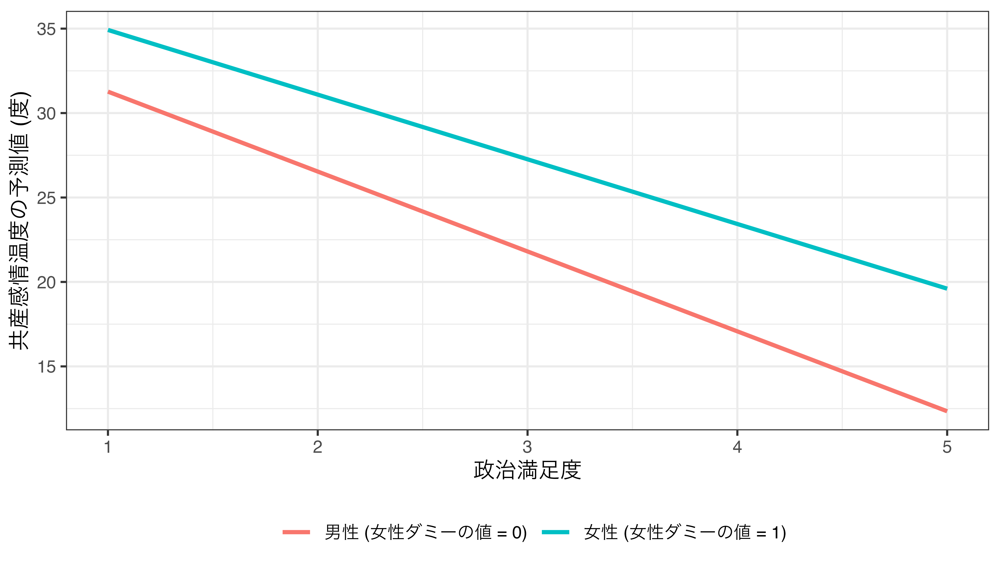
調整変数が連続変数の場合（fit2）
- 推定結果
- 共産に対する感情温度の予測値 = 28.25 + 3.31 \(\times\) 政治満足度 + 0.37 \(\times\) 年齢 - 0.12 \(\times\) 政治関心 - 1.69 \(\times\) イデオロギー + 5.06 \(\times\) 女性ダミー - 0.16 \(\times\) 政治満足度 \(\times\) 年齢
- 共産に対する感情温度の予測値 = 28.25 + (3.31 - 0.16 \(\times\) 年齢) \(\times\) 政治満足度 + 0.37 \(\times\) 年齢 - 0.12 \(\times\) 政治関心 - 1.69 \(\times\) イデオロギー + 5.06 \(\times\) 女性ダミー
- 政治満足度が共産感情温度に与える影響 = (3.31 - 0.16 \(\times\) 年齢の値)
- 20歳の場合 (
Ageの値 = 20)：3.31 - 0.16 \(\times\) 20 = 0.11- 20歳の場合、政治満足度が1単位上がると、共産に対する感情温度は約0.11度上がる。
- 40歳の場合 (
Ageの値 = 40)：3.31 - 0.16 \(\times\) 40 = -3.09- 40歳の場合、政治満足度が1単位上がると、共産に対する感情温度は約3.09度下がる。
- 60歳の場合 (
Ageの値 = 60)：3.31 - 0.16 \(\times\) 60 = -6.29- 60歳の場合、政治満足度が1単位上がると、共産に対する感情温度は約6.29度下がる。
- \(\rightarrow\) 政治満足度が共産に対する感情温度に与える影響は年齢によって変わる。
- 20歳の場合 (
調整変数が連続変数の場合 (fit2)
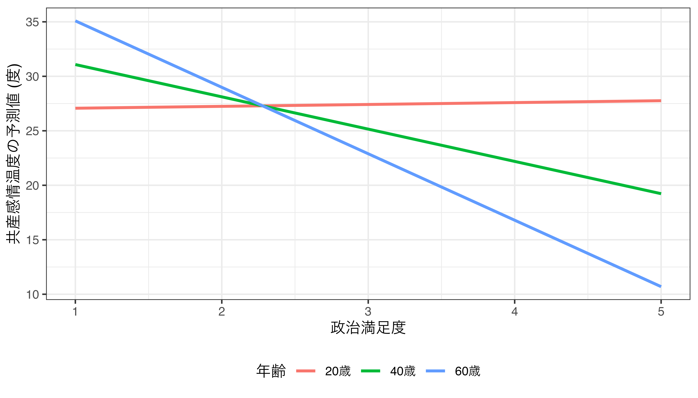
交差項の解釈と限界効果
交互作用をどう報告するか
交互作用: 説明変数が応答変数に与える影響は調整変数の値によって変わる
- \(X\)が\(Y\)に与える影響の統計的有意性を検定する際に用いられる検定統計量は「\(X\)の係数 / \(X\)の標準誤差」であるが、ここでの\(X\)の係数（と標準誤差）は\(Z\)の値によって変わる。
- \(\Rightarrow\) \(Z\)の値によって\(X \rightarrow Y\)の統計的有意性は変わる。
- 調整変数の値ごとに、説明変数が応答変数に与える影響（= 限界効果; marginal effects）と95%信頼区間を図示する。
- 仮説検定に使用する有意水準（\(\alpha\)）が0.1なら90%信頼区間、0.01なら99%信頼区間を使用
{marginaleffect}パッケージを用いた限界効果の計算
{marginaleffect}パッケージのslopes()関数
variablesには説明変数名を指定する（変数名は"で囲むこと）fit1の場合：Femaleの値が0と1の場合の限界効果datagrid(Female = c(0, 1))、またはdatagrid(Female = 0:1)
fit2の場合：Ageの値が18、19、20、…、75の場合の限界効果datagrid(Age = 18:75)
- 限界効果は
estimate列、\(p\)値はp.value列、95%信頼区間はconf.low（下限）とconf.high（上限） - 仮説検定に使用する有意水準（\(\alpha\)）が0.1な
conf_level = 0.9、0.01ならconf_level = 0.99を追加
調整変数がダミー変数の場合 (fit1)
性別と関係なく、政治満足度は共産感情温度に負の影響を与える。
Term Female Estimate Std. Error z Pr(>|z|) S 2.5 % 97.5 %
Satisfaction 0 -4.73 0.561 -8.43 <0.001 54.7 -5.83 -3.63
Satisfaction 1 -3.83 0.611 -6.27 <0.001 31.4 -5.03 -2.63
Columns: rowid, term, estimate, std.error, statistic, p.value, s.value, conf.low, conf.high, Female, predicted_lo, predicted_hi, predicted, TempKyosan, Satisfaction, Interest, Ideology, Age
Type: response Femaleの値が0の場合Satisfactionが1単位上がるとTempKyosanは約-4.73度下がり、\(\alpha = 0.05\)の水準で統計的に有意である。
Femaleの値が1の場合Satisfactionが1単位上がるとTempKyosanは約-3.83度下がり、\(\alpha = 0.05\)の水準で統計的に有意である。
調整変数が連続変数の場合（fit2）
Term Age Estimate Std. Error z Pr(>|z|) S 2.5 % 97.5 %
Satisfaction 18 0.4860 0.912 0.5326 0.594 0.8 -1.30 2.27
Satisfaction 19 0.3292 0.889 0.3704 0.711 0.5 -1.41 2.07
Satisfaction 20 0.1725 0.866 0.1992 0.842 0.2 -1.52 1.87
Satisfaction 21 0.0157 0.843 0.0186 0.985 0.0 -1.64 1.67
Satisfaction 22 -0.1411 0.820 -0.1721 0.863 0.2 -1.75 1.47
--- 48 rows omitted. See ?avg_slopes and ?print.marginaleffects ---
Satisfaction 71 -7.8227 0.724 -10.8001 <0.001 87.9 -9.24 -6.40
Satisfaction 72 -7.9795 0.746 -10.6958 <0.001 86.3 -9.44 -6.52
Satisfaction 73 -8.1362 0.768 -10.5922 <0.001 84.7 -9.64 -6.63
Satisfaction 74 -8.2930 0.790 -10.4908 <0.001 83.1 -9.84 -6.74
Satisfaction 75 -8.4498 0.813 -10.3908 <0.001 81.6 -10.04 -6.86
Columns: rowid, term, estimate, std.error, statistic, p.value, s.value, conf.low, conf.high, Age, predicted_lo, predicted_hi, predicted, TempKyosan, Satisfaction, Interest, Ideology, Female
Type: response Ageが18の場合、SatisfactionはTempKyosanに影響を与えているとは言えない（\(p \geq 0.05\)のため）。Ageが19の場合、SatisfactionはTempKyosanに影響を与えているとは言えない（\(p \geq 0.05\)のため）。- （省略）
Ageが75の場合、Satisfactionが1単位上がるとTempKyosanは約-8.4度下がり、\(\alpha = 0.05\)の水準で統計的に有意である。
省略された行の表示
print()内にtopn = Infを追加する。
Term Age Estimate Std. Error z Pr(>|z|) S 2.5 % 97.5 %
Satisfaction 18 0.4860 0.912 0.5326 0.59428 0.8 -1.30 2.2744
Satisfaction 19 0.3292 0.889 0.3704 0.71111 0.5 -1.41 2.0716
Satisfaction 20 0.1725 0.866 0.1992 0.84207 0.2 -1.52 1.8692
Satisfaction 21 0.0157 0.843 0.0186 0.98512 0.0 -1.64 1.6672
Satisfaction 22 -0.1411 0.820 -0.1721 0.86336 0.2 -1.75 1.4653
Satisfaction 23 -0.2978 0.797 -0.3737 0.70861 0.5 -1.86 1.2641
Satisfaction 24 -0.4546 0.774 -0.5870 0.55723 0.8 -1.97 1.0634
Satisfaction 25 -0.6114 0.752 -0.8126 0.41642 1.3 -2.09 0.8631
Satisfaction 26 -0.7681 0.730 -1.0515 0.29302 1.8 -2.20 0.6636
Satisfaction 27 -0.9249 0.709 -1.3048 0.19196 2.4 -2.31 0.4644
Satisfaction 28 -1.0817 0.688 -1.5731 0.11570 3.1 -2.43 0.2660
Satisfaction 29 -1.2384 0.667 -1.8574 0.06325 4.0 -2.55 0.0684
Satisfaction 30 -1.3952 0.646 -2.1587 0.03087 5.0 -2.66 -0.1285
Satisfaction 31 -1.5520 0.626 -2.4774 0.01324 6.2 -2.78 -0.3241
Satisfaction 32 -1.7087 0.607 -2.8156 0.00487 7.7 -2.90 -0.5193
Satisfaction 33 -1.8655 0.588 -3.1730 0.00151 9.4 -3.02 -0.7132
Satisfaction 34 -2.0223 0.570 -3.5504 < 0.001 11.3 -3.14 -0.9059
Satisfaction 35 -2.1790 0.552 -3.9488 < 0.001 13.6 -3.26 -1.0975
Satisfaction 36 -2.3358 0.535 -4.3666 < 0.001 16.3 -3.38 -1.2874
Satisfaction 37 -2.4926 0.519 -4.8048 < 0.001 19.3 -3.51 -1.4758
Satisfaction 38 -2.6493 0.503 -5.2627 < 0.001 22.7 -3.64 -1.6627
Satisfaction 39 -2.8061 0.489 -5.7368 < 0.001 26.6 -3.76 -1.8474
Satisfaction 40 -2.9629 0.476 -6.2272 < 0.001 31.0 -3.90 -2.0303
Satisfaction 41 -3.1196 0.464 -6.7279 < 0.001 35.8 -4.03 -2.2108
Satisfaction 42 -3.2764 0.453 -7.2373 < 0.001 41.0 -4.16 -2.3891
Satisfaction 43 -3.4332 0.443 -7.7476 < 0.001 46.6 -4.30 -2.5647
Satisfaction 44 -3.5900 0.435 -8.2545 < 0.001 52.5 -4.44 -2.7375
Satisfaction 45 -3.7467 0.428 -8.7510 < 0.001 58.7 -4.59 -2.9076
Satisfaction 46 -3.9035 0.423 -9.2287 < 0.001 65.0 -4.73 -3.0745
Satisfaction 47 -4.0603 0.419 -9.6810 < 0.001 71.2 -4.88 -3.2382
Satisfaction 48 -4.2170 0.417 -10.1008 < 0.001 77.3 -5.04 -3.3988
Satisfaction 49 -4.3738 0.417 -10.4824 < 0.001 83.0 -5.19 -3.5560
Satisfaction 50 -4.5306 0.419 -10.8208 < 0.001 88.2 -5.35 -3.7099
Satisfaction 51 -4.6873 0.422 -11.1130 < 0.001 92.9 -5.51 -3.8606
Satisfaction 52 -4.8441 0.427 -11.3569 < 0.001 96.9 -5.68 -4.0081
Satisfaction 53 -5.0009 0.433 -11.5545 < 0.001 100.2 -5.85 -4.1526
Satisfaction 54 -5.1576 0.441 -11.7057 < 0.001 102.7 -6.02 -4.2941
Satisfaction 55 -5.3144 0.450 -11.8152 < 0.001 104.6 -6.20 -4.4328
Satisfaction 56 -5.4712 0.460 -11.8847 < 0.001 105.8 -6.37 -4.5689
Satisfaction 57 -5.6279 0.472 -11.9182 < 0.001 106.4 -6.55 -4.7024
Satisfaction 58 -5.7847 0.485 -11.9239 < 0.001 106.5 -6.74 -4.8339
Satisfaction 59 -5.9415 0.499 -11.9026 < 0.001 106.1 -6.92 -4.9631
Satisfaction 60 -6.0982 0.514 -11.8597 < 0.001 105.4 -7.11 -5.0904
Satisfaction 61 -6.2550 0.530 -11.7980 < 0.001 104.3 -7.29 -5.2159
Satisfaction 62 -6.4118 0.547 -11.7235 < 0.001 103.0 -7.48 -5.3398
Satisfaction 63 -6.5685 0.564 -11.6394 < 0.001 101.6 -7.67 -5.4625
Satisfaction 64 -6.7253 0.583 -11.5442 < 0.001 100.0 -7.87 -5.5835
Satisfaction 65 -6.8821 0.601 -11.4457 < 0.001 98.4 -8.06 -5.7036
Satisfaction 66 -7.0388 0.621 -11.3415 < 0.001 96.6 -8.26 -5.8224
Satisfaction 67 -7.1956 0.640 -11.2347 < 0.001 94.9 -8.45 -5.9403
Satisfaction 68 -7.3524 0.661 -11.1239 < 0.001 93.1 -8.65 -6.0569
Satisfaction 69 -7.5092 0.682 -11.0166 < 0.001 91.3 -8.85 -6.1732
Satisfaction 70 -7.6659 0.703 -10.9084 < 0.001 89.6 -9.04 -6.2886
Satisfaction 71 -7.8227 0.724 -10.8001 < 0.001 87.9 -9.24 -6.4031
Satisfaction 72 -7.9795 0.746 -10.6958 < 0.001 86.3 -9.44 -6.5173
Satisfaction 73 -8.1362 0.768 -10.5922 < 0.001 84.7 -9.64 -6.6307
Satisfaction 74 -8.2930 0.790 -10.4908 < 0.001 83.1 -9.84 -6.7436
Satisfaction 75 -8.4498 0.813 -10.3908 < 0.001 81.6 -10.04 -6.8559
Columns: rowid, term, estimate, std.error, statistic, p.value, s.value, conf.low, conf.high, Age, predicted_lo, predicted_hi, predicted, TempKyosan, Satisfaction, Interest, Ideology, Female
Type: response - 30歳未満の場合、政治満足度（
Satisfaction）は共産感情温度（TempKyosan）に影響を与えるとは言えない。 - 30歳以上の場合のみ、政治満足度は共産感情温度に負の影響を与える。
限界効果の可視化
- 可視化の方法は第10回を参照
- 95%信頼区間内に0が含まれていれば、説明変数は応答変数に影響を与えるとは言えないと解釈
- 0が95%信頼区間外にあれば、説明変数は応答変数に影響を与えると解釈可能
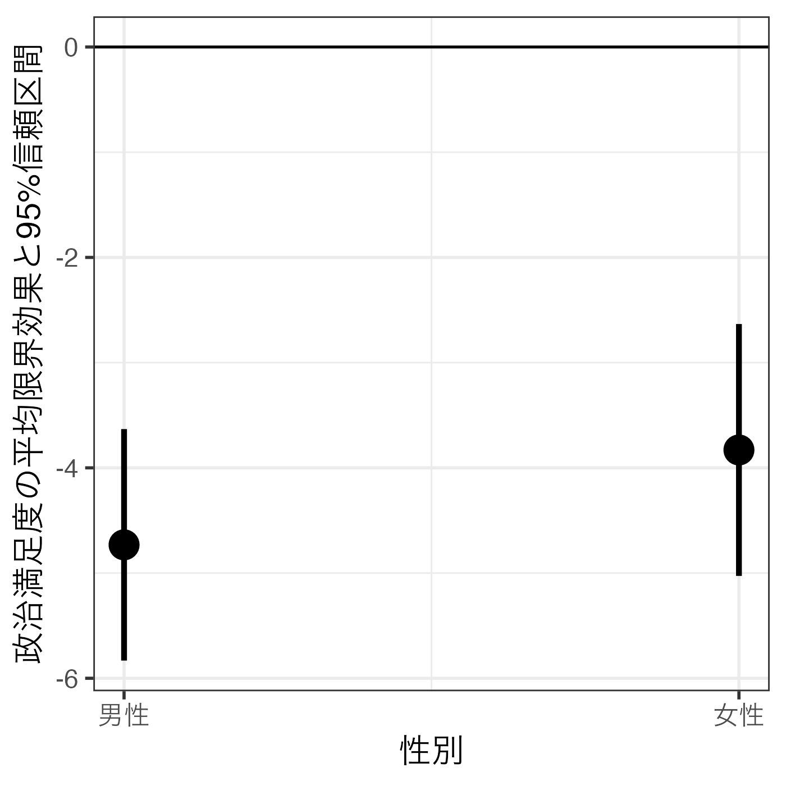
fit2_ame |>
ggplot(aes(x = Age)) +
geom_ribbon(aes(ymin = conf.low, ymax = conf.high), fill = "gray80") +
geom_hline(yintercept = 0) +
geom_line(aes(y = estimate), linewidth = 1) +
labs(x = "年齢", y = "政治満足度が共産感情温度に\n与える影響と95%信頼区間") +
scale_x_continuous(breaks = c(18, 20, 30, 40, 50, 60, 70, 75),
labels = c(18, 20, 30, 40, 50, 60, 70, 75)) +
theme_bw(base_size = 12)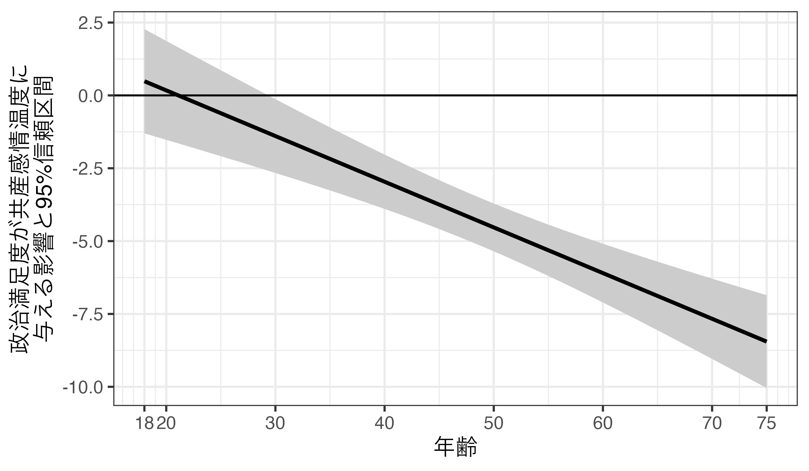